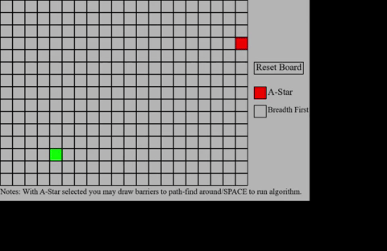
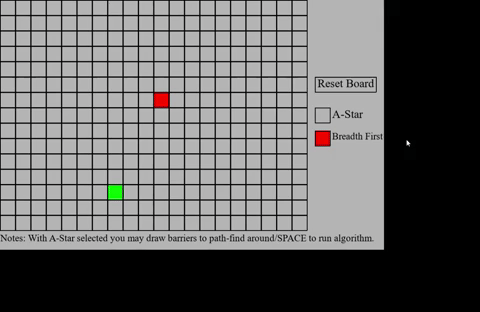

I've always found algorithms in general to be very intriguing. Being able to just write
a chunk of code that self sufficient in completing a specific task that you designed it to do.
In particular, I've always really liked the idea of pathfind algorithms. Being able to specify a start point a,
and end point b, and saying "whats the best way to get from a to b?" It just seems, well, so
useful. The applications seem endless, ranging from more obvious use cases like an enemy in a game
to more niche cases like a traffic simulation for a big city. The intrigue of algoriths coupled with
the usefulness of pathfind made it seem like the perfect side project. But seeing as though I've not had
any hands on experience with pathfinding algorithms yet, I had to take to the internet for some reasearch.
In my research I found that many different pathfinding algorithms exist, and all with their own pros and cons.
I ended up landing on Breadth-First as one of my picks because it seemed the easiest to impliment. However, I
also wanted to challenge myself a bit more so I also decided to give A* a shot since it seemed more industry
standard and more complicated. So I had the two pathfinding algorithms picked out, all that was left to do was
reaseach how they actually worked and impliment them. Easy enough right...?
My approach
For my approach on this project I knew that I would have to do a fair bit of research on the two
pathfinding algorithms I chose. I started with Breadth-First Search since, based on my prior research,
I knew that it would be much simpler. The basic concept is to have a start cell in a type of graph. Then
the search radiates out with the start as its center until it comes across the end cell. Once the end cell
is found it uses data stored from the searching process and working its way back from end to start recreating the
path to get there. Now with the very broad concept down lets get a little more technical.
To start off I needed some form of a graph, which in my case I just went ahead and made a grid made up of "Cell"
objects. This list of Cell objects was stored inside of a Map class to keep everything very self contained. With
this in place I made one more list as well as a dictinary, the list is our frontier and the dictinary called came_from.
The frontier list will represent the next cells that the algorithm will go to and the came_from dict holds the cells that have already
been visited and how we got to them. Now with just those two things we can navigate to the end cell reletively easily. Lets lay
out those steps since they are quite simple:
Step 1: Start off by adding our start cell into our frontier list
Step 2: Pop the first element in our frontier list out and call that our current cell
Step 3: Gather all cells adjacent to current cell into list called Neighbors
Step 4: If a Neighbor cell is not in came_from add it to our Frontier list and append it into our came_from dict with the adjacent cell
as the key and the current cell as the value.
Step 5: Repeat steps 2-4 until the current cell is our end cell.
Step 6: We can use our came_from dict to recreate the path taken to get to the end cell. The end result will look something like this if visualized as I have done in this project (NOTE: I have
intentinally slowed down the process of the pathfinding here to make it easier to see).
Now that Breadth-First Search was done I realized just how slow and inefficient it is. There is so much pointless
work done that we are able to visually see. This is where A* comes into play, it provides a much more efficient
solution to our pathfind between points. The great part is that all prior knowledge carries over from Breadth-First
Search in reguards to our frontier and came_from data structures. All we really do is add to those prior concepts.
The main difference is the addition of "cost". Cost in this reguard represents the distance between the cell and
the end point as well as the cost of the cell. Giving a cell a cost can represent something like a wall that must
be navigated around. If we add the concept of a cost (plus a couple other minor things) to our Breadth-First
Search we essentially get A*. Since the steps of this are a bit more complicated and lengthy I would recommend looking at
the bottom of this page to check how you can access the source code. Once all is said and done the visual implimentation
of this process loos something like this:
 (NOTE: I have intentinally slowed down the process of the pathfinding here to make it easier to see,
but the full speed result is increadibly fast.)
As is now made easily visible, when A* is selected you are able to draw barriers to pathfind around. This process,
as mentioned before, is very simple to achieve since we can just adjust the cost of that cell and the alogorithm
adjusts accordingly.
Challenges Faced and Things Learned
This self project proved to have many different challenges. The most notable of them all would definitely be the
learning curve. At this point in time I've recieved no formal eduation on anything to do with practical algorithms
like the ones I worked with here. I have also not had any prior learning of graphs or graph theory. Both of these
things are quite critical to understand when doing a project such as this. Due to this it made the background
information research, where I had to teach myself those things, probably one of the most challenging things to accomplish.
However, because of the difficulty in teaching myself those things it was also one of the greatest things I learned.
Besides the obvious concepts learned with A* and Breadth-First Search, the experience gained on how to actually go
about learning these kinds of concepts from scratch is invaluable.
How to check out the project?
The project with all the source code is up on my GitHub for you to download if you'd like to check it out!